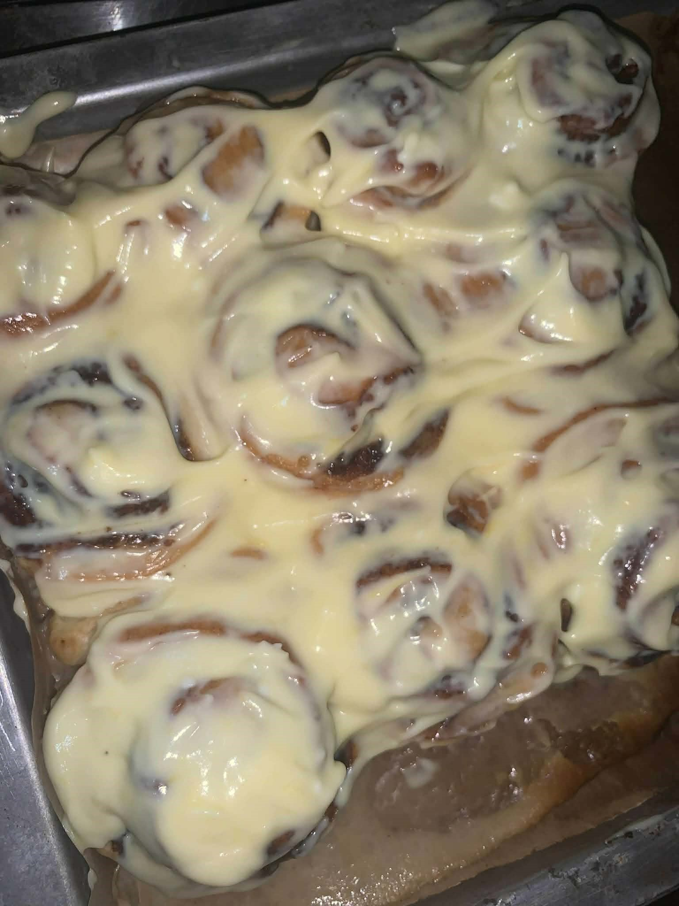

About Me
Hello! I am a second-year BAMS student who is interested in learning new things. Whether I'm working on a digital work, making a delicate meringue, or pulling the perfect espresso shot, my life is all about trying, learning, and improving.
Things I Love
- Listening to music
- Watching movies
- Baking
- Making coffee and matcha
Passion Projects

Homemade Cinnamon Rolls
One of my passions is baking. I enjoy trying different recipes and learning new techniques. One of my favorite things to bake is cinnamon rolls.
My Other Passion Projects
Aside from baking, here are some of my other passion projects that I've worked on.
A Little Clay Version of Her
Created a miniature version of my partner using air-dry clay as a handmade gift.
Date: July 8, 2026
My First Homemade Tiramisu
Decided to try making my own tiramisu at home.
Date: May 3, 2026
Words I Wanted to Say
Wrote personal letters and poems to express my thoughts and appreciation for someone.
Date: February 11, 2026